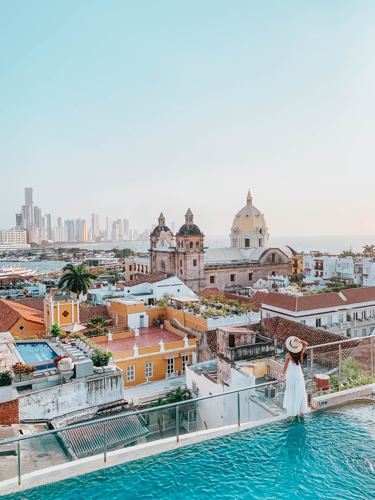
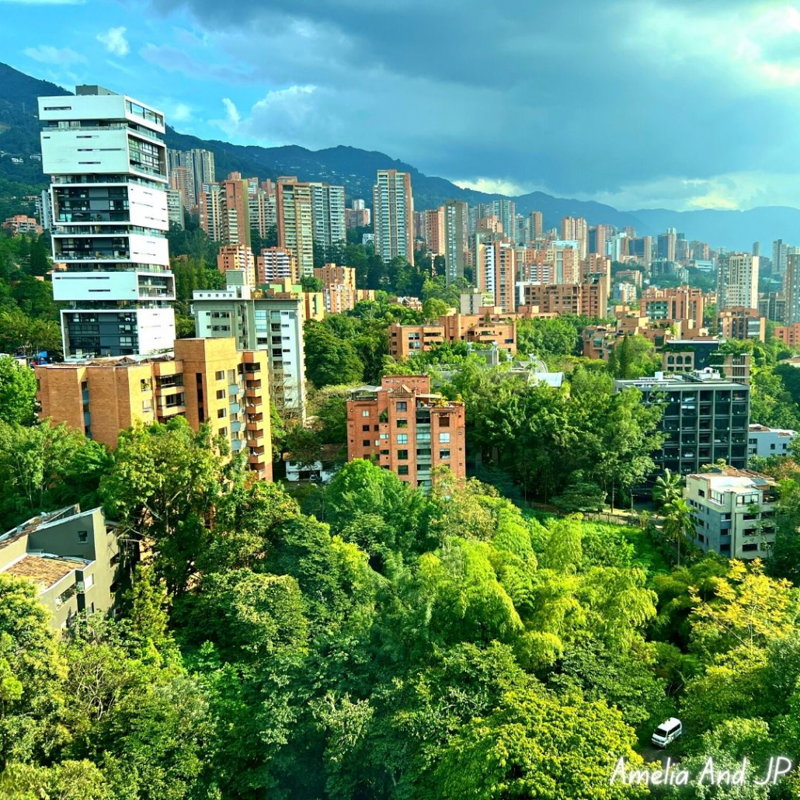
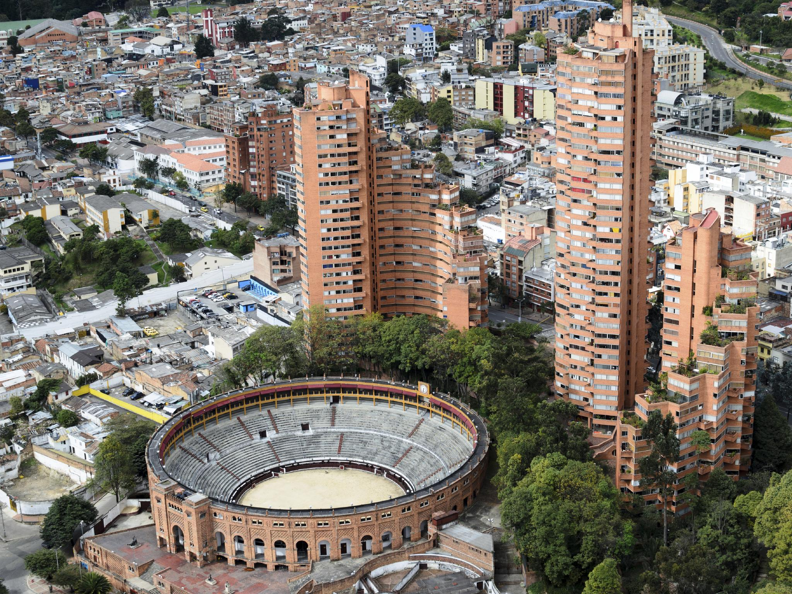
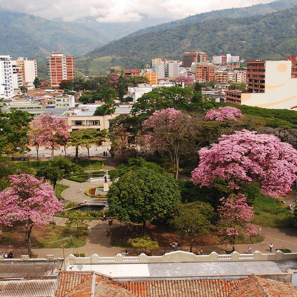

Bienvenido a Dyangel's Agency
Aqui encontrara experiencias únicas y emocionantes.





Destinos
- Ibague
- Plaza de Bolívar: Al igual que en muchas ciudades colombianas, la Plaza de Bolívar es el corazón de Ibagué. Es un lugar donde la gente se reúne para relajarse, disfrutar del ambiente y observar la arquitectura circundante, incluida la Catedral de Ibagué.
- La Loma de la Cruz: Esta colina ofrece una vista panorámica de la ciudad de Ibagué y sus alrededores. Es un lugar popular para hacer senderismo y disfrutar de la vista.
- Centro Cultural Combeima: Este centro cultural alberga exposiciones de arte, eventos culturales y actividades educativas. Es un lugar importante para la promoción de la cultura en Ibagué.
- Centro de Convenciones Alférez Real: Este centro de convenciones es un lugar importante para eventos, conferencias y ferias en la ciudad.
- Parque Nacional Natural Los Nevados: Aunque está un poco alejado de la ciudad, el Parque Nacional Natural Los Nevados es una visita obligada para los amantes de la naturaleza y el senderismo. Ofrece paisajes espectaculares, incluidos picos nevados, lagunas glaciares y una variedad de flora y fauna.
-
Cartagena
- Ciudad Amurallada (Centro Histórico): Este es el corazón de Cartagena, rodeado por impresionantes murallas del siglo XVI. Dentro de la ciudad amurallada, encontrarás calles empedradas, plazas encantadoras, iglesias históricas, casas coloniales y una gran cantidad de tiendas, restaurantes y hoteles.
- Convento de la Popa: Ubicado en la cima de una colina, este convento ofrece vistas espectaculares de Cartagena y es un lugar sagrado de peregrinación.
- Palacio de la Inquisición: Este edificio colonial alberga el Museo Histórico de Cartagena, que ofrece una visión de la historia de la Inquisición en Colombia y la vida colonial en la ciudad.
- Isla de Barú y Playa Blanca: Situada a poca distancia en barco de Cartagena, la Isla de Barú es famosa por sus hermosas playas de arena blanca y aguas cristalinas. Playa Blanca es una de las playas más populares de la isla.
- Las Bóvedas: Originalmente construidas como bodegas, estas estructuras ahora albergan tiendas de artesanías y recuerdos.